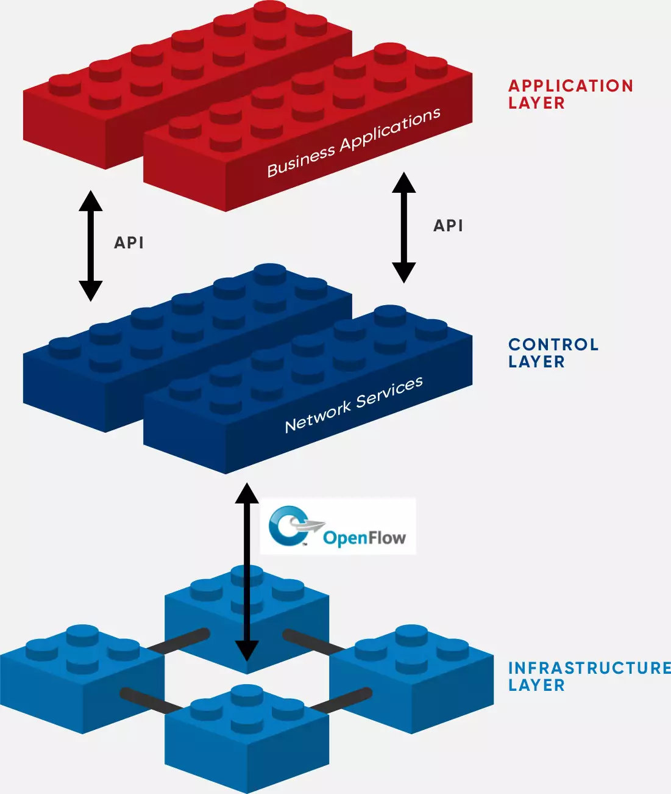
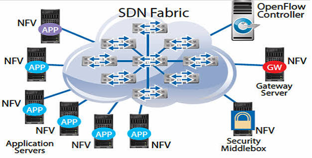

NFV e SDN
Duas tecnologias diferentes com um objetivo em mente: tornar a rede de computadores escalável, flexível e programável.
O que é SDN
Assim, o funcionamento core do SDN é calcular as rotas específicas para cada switch (ou vswitch), e comunicar o cálculo à cada um deles via OpenFlow.
Com essa separação do encaminhamento lógico para o roteamento de fato, podemos criar rotas mais
complexas abrangindo os elementos da rede Overlay, pois o roteamento pesado,
que é baseado em algoritmos fixos (que é usado para ser simples e evitar loops) , acontece na rede Underlay.
Além disso, por possibilitar escolhas de roteamentos genéricos nas redes overlay, pode-se fazer decisões mais complexas como QoS melhor.

Semelhanças
Não é coincidência ambas as tecnologias terem os mesmos "fundamentos". Com os pontos apresentados de semelhanças, fica clara que a ideia é que ambas usam os mesmos métodos, só que para atacar problemas diferentes. A razão dessa abordagem semelhante não tem sua explicação dentro da tecnologia, de fato, mas sim na lógica da economia de escala dos ambientes de nuvem, crescentes desde a época dos seus lançamentos. A ideia é usar hardware genérico, barato, e de uso em massa para tornar a computação barata, também chamados de "COTS" ℹ️ Commercial-Off-The-Shelf: hardware genérico e barato, de uso geral, com o propósito de ser usado em grandes quantidades para formar sistemas. , e assim virtualizar hardware dedicado.
Como se complementam
Visivelmente, por atacarem problemas diferentes, são tecnologias independentes, que podem ser usadas com ou sem a outra. Porém, é claro que as duas tecnologias trabalham bem juntas.
